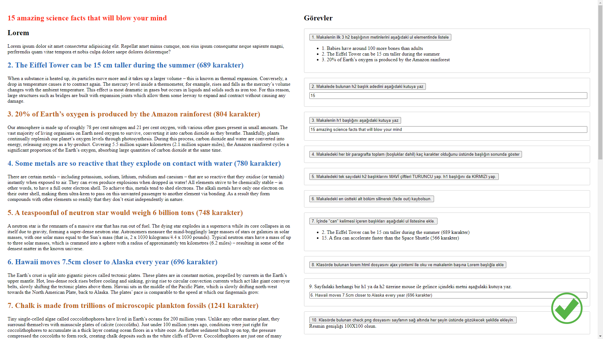

Ödev
Açıklamalar
- odev1.html dosyasında görevleriniz butonlar üzerinde yazmaktadır. O butonlara tıklanınca ilgili işlemler cozum1.js dosyasında yazdığınız jquery/javascript kodları sayesinde gerçekleşmelidir.
- odev1.html dosyasındaki görevleri yerine getirebilmeniz için jquery kütüphanesi ve javascript kodlarınızı yazabileceğiniz cozum1.js dosyası sayfa sonuna dahil edilmiştir.
- Görevlerin tamamını cozum1.js dosyasındaki ilgili alanlara kod yazılarak yapılacaktır.odev1.html dosyasının kodlarında herhangi bir değişiklik yapılmayacaktır.
- Ödevi tamamlamak için gerekli tüm dosyalar: gerekli dosyalar
Tüm görevler tamamlandıktan sonra ilgili butonlara tıklanınca aşağıdakine benzer bir görünüm oluşmalıdır.
